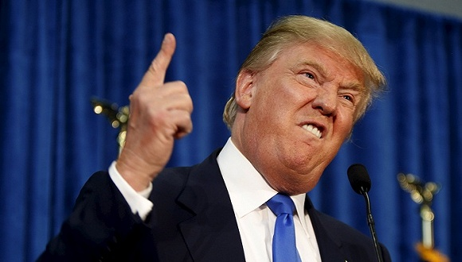

我尝试思考后现代主义兴起的脉络。
理解「后现代主义」中的「后现代」不应该抛开「现代」来谈，错误的观点是将「后现代」当作「现代之后」发生的事情，而应将「后现代」作为「现代」的延续。这种延续性来自于「批判性」：「后现代主义」中的批判性本身就是「现代主义」（对启蒙运动之前的前现代而言）批判性的延续，在这点上，「后现代主义」与「现代主义」是一脉相承的。
「现代」的开端普遍被认为是「启蒙时代（Age of Enlightenment）」，这场运动的核心在于德意志哲学家康德所言「敢于求知（Sapere aude）」，即认为「理性」是将人类意识从不成熟的无知状态中解救出来的唯一担当。
这一论述所「批判」的即是前现代中的神学权威和传统教条所解释的世界：神或超自然是道德、人的尊严、以及真理的基础，也是所有知识和智慧的起点，对神有信心，就能正确理解世界。
法国哲学家笛卡尔（René Descartes）成为启蒙时代重要的「反叛者」，著名「我思故我是（Cogito, ergo sum）」便是启蒙时代的初音。他第一次建立了全新的「认识原则」，这个认识期待凌驾于个人感官、普世观点、自然科学原理之上的「绝对真实」，这「反叛」了现有的「神的解释」：当我试图怀疑「思考中的我」的真实性时，我已经在思考了，因此「思考中的我」「绝对存在」，这种存在不需要「神的解释」。
当人们发现神的解释并不是唯一时，神在人们心中的位置开始发生偏移，取而代之的是「对人本身潜能和推理能力的乐观态度」，同时人们对于神权教条与基督教义产生了进一步的怀疑。道德、人的尊严、以及真理的基础不再因为神得以保存，知识和智慧也不以神为起点，而人成为了心的「主体思想」。
「人作为主体思想」这把匕首最终划开了「新世界」和「旧世界」，法国大革命的爆发宣告新旧世界的彻底割裂，也代表着现代主义「现代性」的三大核心基础：
 法国大革命通常被认为是新旧世界大割裂的开始。
法国大革命通常被认为是新旧世界大割裂的开始。
现代性首先承认「人是认知、权利和价值的主体」、其次认为「表象（Representation）」是人作为主体对自然世界这个客体的体现、最后用「理性」的方式解释。
这样的思想构架中最典型的结果首先是科学、艺术、和规则的三者分化，科学追求「真的极致」、艺术追求「美的极致」、规则追求「正义的极致」；其次是表象文化深入到社会中科学、艺术、政治等各个领域，例如「代议士」作为「人的代表」取代教士集团作为「神的代表」；最后严密解释、并相信绝对真理的「宏大叙事」体系层出不穷，它们都尝试用「极端理性」的方式解释世界发展的方向。
在这个主流思想之上，人们认为「上帝已死」的背后存在着「上帝并没有死，只是被人取代」的认识。无论是马克思主义、法西斯主义、以及资本主义的产生都希望用宏大叙事的方式、用极端理性的方式确定一个客体世界发展的真理。
鲍曼（Zygmunt Bauman）在《现代性与大屠杀》一书中提出这样一个问题「既然是理性的文明社会，为什么会发生对犹太人的大屠杀？」。用反犹主义来解释大屠杀的发生是不客观的，因为首先德国并不存在强烈的反犹主义、对犹太人的仇视也并不根深蒂固，另一方面反犹主义存在千年却从未发生过大屠杀的先例。
 犹太人大屠杀是一个高度文明化社会的理性灾难。
犹太人大屠杀是一个高度文明化社会的理性灾难。
鲍曼认为，正是「理性的现代性」导致了大屠杀：在一个极度理性的社会里，宏大叙事（希特勒关于一个没有犹太人的强大德国的叙述）搭配着精确划分与运作的现代官僚体系，共同制造了一场精心策划、理智执行、毫无道德压力的600万人丧生的屠杀。
鲍曼痛苦写到：
在走向现代性的旅途中，每一扇门砰然关上时，犹太人的手指刚好放在了门缝上...他们骑在了所有的屏障上，子弹身前身后呼啸而来。
在柏林墙倒塌之前的世界主要意识形态中，我们都可以发现这些线索。人类在现代主义的基础之上，用极端理性的方式，消灭了只有一个神的「旧世界」、建立了有多个神的「新世界」，最终一场共产主义、资本主义、法西斯主义的「众神之战」中，人类为心中膜拜的「宏大叙事之神」杀红了眼。
如基督教哲学家Merold Westphal所定义的现代主义：
- 追求绝对真理（源自笛卡尔所代表的理性主义）；
- 追求集权主义（代表集中完整体系的叙述）；
- 在不提及神的情况为人类的尊严、自由、道德、和进步创造「伟大故事」。
近150年人类的悲惨经历，开始让人类思考启蒙运动以来西方哲学中占主导地位的三大主义：
- 认识中的表象主义：要求人们用理性的、知识的、理论的眼光看待一切；
- 真理上的基础主义：用绝对化的真理追求永恒理想；
- 历史观上的普遍主义：在进化论启示下认定什么是进步的、什么是落后的，认为普世价值观、并相信同样的制度、方法、途径、和实践。
为什么说后现代主义并不是现代主义的下一个阶段，对于现代主义三大价值的批判与质疑在其启蒙阶段的文艺复兴时期就已经存在。
与文艺复兴三杰精准的理性绘制不同，同时期的耶罗尼米斯·博斯（Hieronymus Bosch）的画作则体现的是「极不理性」的怪诞。这并不是20世纪达达主义的苏黎世，而是500年前的荷兰。
 耶罗尼米斯·博斯的作品，与同时期文艺复兴画家精确的绘画作品大相径庭，被称为500年后超现实主义的启发者之一。
耶罗尼米斯·博斯的作品，与同时期文艺复兴画家精确的绘画作品大相径庭，被称为500年后超现实主义的启发者之一。
他希望构建的不是以人为主体的理性与客观表象，而是瞬间的浮现：不存在普遍真理、也没有客观表象！既然没有真理和客观表象，就没有解释的必要！现代艺术者不遗余力所做的，就是挑战基于普遍真理的「主体膨胀」。
那件购自第五大道118号莫特卫生设备用品的小便池成为了西方现代艺术的「里程碑」，杜尚用一种「态度」而非「艺术」去挑战了现代性价值观之上「艺术」的表象、真理、和历史观。在现代主义的经典史观中，人们存在对艺术的「主体思想」，即对艺术「秩序和标准的理性期待」，博物馆的产生，正是陈列「主体思想」最完美的方式，换句话说，博物馆艺术就是「主体膨胀」的象征。
 杜尚用一种谈论艺术的方式挑战了博物馆艺术所代言的「主体膨胀」。
杜尚用一种谈论艺术的方式挑战了博物馆艺术所代言的「主体膨胀」。
《泉》所代表一系列离经叛道的「垃圾艺术品」，它们挑战的是博物馆艺术所代言的「主体膨胀」，其意义并不在于作品的「艺术性」，更多在于谈论艺术的方式，即宣布「没有什么单一叙事、占优势地位的立场，没有凌驾于其他体系或理论之上的系统和理论（参考）」。
那座象征「非永恒艺术真理」的小便池，正用「永恒地」方式陈列在「永恒的」博物馆中，成为「永恒的」艺术标准的一部分，多么吊诡的一件事。
同样后现代主义也陷入自身的逻辑危机，例如，当后现代主义相信没有「二元论」的逻辑，即现代主义中宣称的「真和假」、「对与错」、「公平与不公平」，但是宣称有或没有本身又落入了二元论的逻辑圈套，正如相信「世界上绝对没有绝对的事」本身就是矛盾的。
这也是为什么有很多认为「后现代主义」只不过是美国人巧妙销售自身宏大叙事（例如把追求人人平等自由的民主制度作为普世标准）的一种方式，它的目的是在在现有「博物馆」（比如中东、亚洲）中，挤一个位置，甚至占据整个博物馆。
但我倒愿意相信这就是人类与生俱来的矛盾之处，既留恋和追求绝对真理，无论是神的解释，还是科学的解释；又无时无刻不对所谓真理（无论是上帝、科学、还是意识形态）保持警惕和怀疑。有趣的是，二者都可能导致可怕的结果：犹太人大屠杀和中东乱象本质没有区别，都是相信绝对真理和宏大叙事（法西斯主义或西方民主唯一论）的理性结果；而美国大选中特朗普现象背后大行其道的反智主义和犬儒主义，也是人类对于现有真理和体制的短暂戏虐。
 特朗普所代表的反智主义是一件戏虐绝对真理的「垃圾艺术品」。
因此与其说「后现代主义」不如说「反现代主义」，后现代主义对于人类的贡献不在于为博物馆中贡献了几件不明就里的「垃圾艺术品」，而在于人类开始认识到自身的「逻辑吊诡」，而认识吊诡本身要比解决它要重要的多。
此外，重要一点是，「两害取其轻」，比较起「现代性」所带来的恶果，特朗普就像摆在主流艺术界面前的小便池，争议不断，最后的结果就算真有可能登入大雅之堂，但它终究变成现代艺术规则的一部分，从这个意义上来看，警惕「现代主义」更加有现实意义。
附参考材料：
- 张旭东-《后现代主义与中国现代性》
- Paul Copan - 《什么是后现代主义》
- 沈清松,〈從現代到後現代〉,《哲學雜誌》, 第四期 (台北 哲學雜誌社,1993), 頁 4-25
- 《后现代主义思想与教育理念》
- 《谁杀死了后现代主义》
- 李幼蒸 -《论后现代主义的策略和后果》
- 丁东红 -《作為主體的人死了”？——後現代主義的三大批判 》
- 王端廷 -《西方現代、後現代和當代藝術的分期與區別》
- 郇建立 - 《現代性的悲哀》
- 《艺术的两重性：从杜尚的《泉》看当代艺术的文化角色》